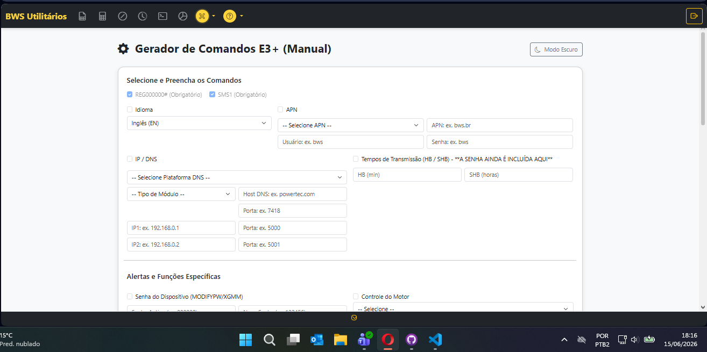
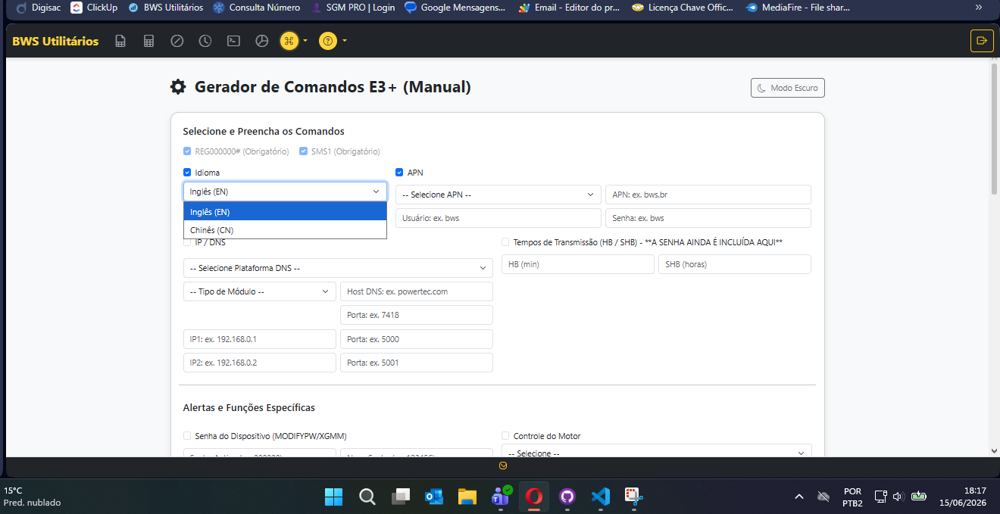
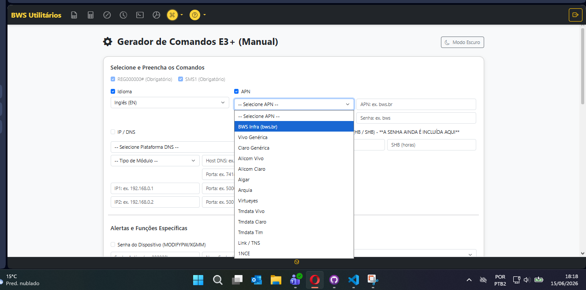
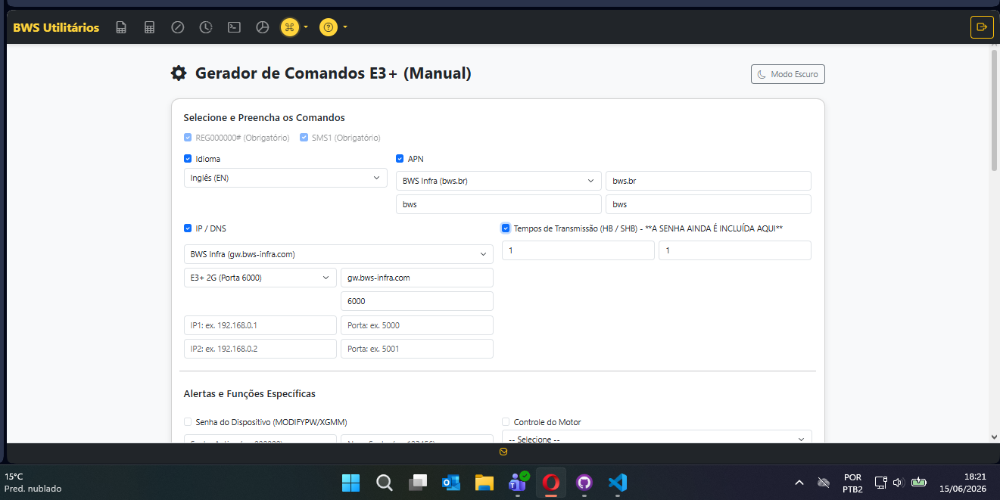
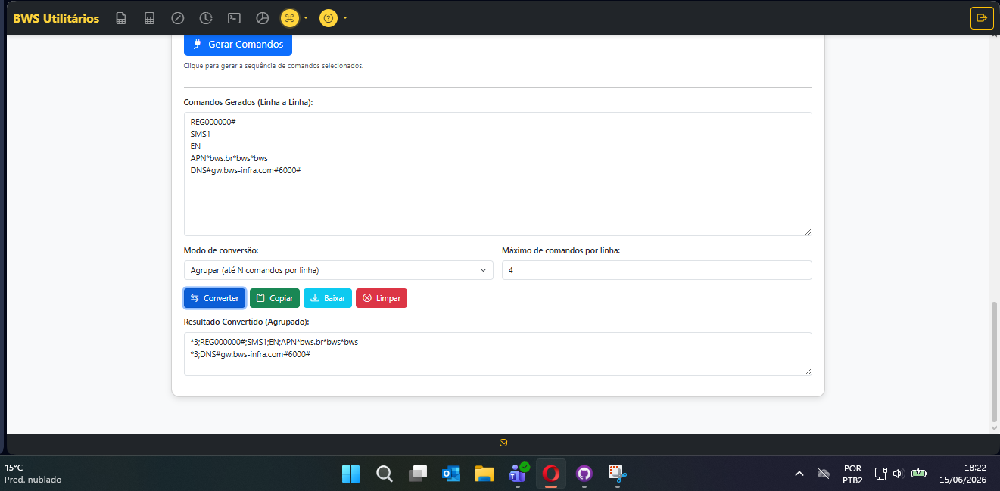

Planeje e gere comandos SMS para configuração remota de dispositivos E3+2G e E3+4G.
Planejamento de Configurações via SMS
Esta ferramenta permite selecionar comandos, configurar opções e gerar comandos SMS prontos para envio aos dispositivos E3+2G e E3+4G.

Na tela principal, você encontra todos os comandos disponíveis para configuração dos dispositivos E3+2G e E3+4G. Selecione os checkboxes dos comandos que deseja configurar.

Para cada comando selecionado, escolha as opções disponíveis ou escreva os valores necessários. Entre parênteses, há dicas de como preencher cada campo corretamente.

No campo da APN, além de escrever manualmente, você pode escolher no combobox APNs prontas para seleção rápida. Atenção: Para o comando ser gerado, o checkbox ao lado da APN precisa estar selecionado.
Importante: Marque o checkbox ao lado do comando para que ele seja incluído na geração

Abaixo exemplos práticos de preenchimento para cada tipo de comando nos equipamentos E3+2G e E3+4G:
Idioma
CN, EN
(CN = Chinês, EN = Inglês)
APN
claro.com.br, vivo.com.br, tim.com.br
DNS
8.8.8.8, 8.8.4.4
(Google DNS)
Porta
8080, 3128, 80
HB (Heartbeat)
60, 120, 300
(minutos)
SHB (Sleep Heartbeat)
24, 48, 72
(horas)

Após configurar todos os comandos desejados, clique no botão Gerar Comandos. O sistema irá:
Abaixo do botão "Gerar Comandos", você encontra a conversão de comandos que funciona somente no E3+4G. Este conversor foi desenvolvido para trazer agilidade ao atendimento, já que muitos comandos são realizados no 4G e são iguais.
Agilidade no Atendimento: O conversor foi realizado para trazer agilidade ao atendimento, pois muitos comandos são realizados no 4G e são iguais.
Compatibilidade: Conversor disponível exclusivamente para o modelo E3+4G.
1. Selecionar
Comandos desejados
2. Configurar
Opções e valores
3. APNs
Prontas ou manual
4. Gerar
Comandos SMS
5. Converter
(Somente E3+4G)
Para o comando ser gerado, o checkbox ao lado precisa estar selecionado.
Use as dicas entre parênteses para preencher corretamente cada campo.
Tempo em minutos entre as comunicações do dispositivo com o servidor.
Tempo em horas entre as comunicações em modo de espera/desligado.
Central de Comandos · Saitro
Compatível com E3+2G e E3+4G | Conversor exclusivo para E3+4G